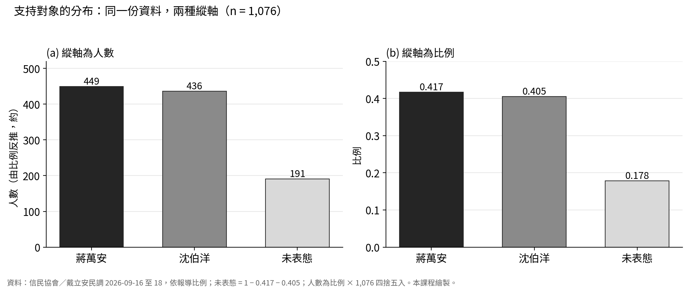
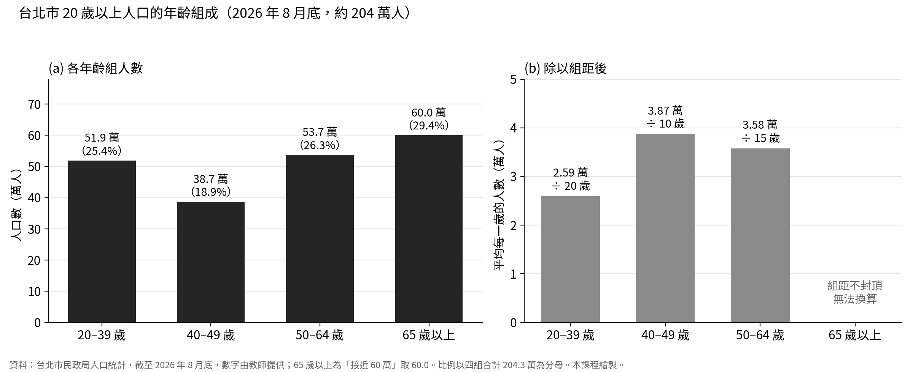
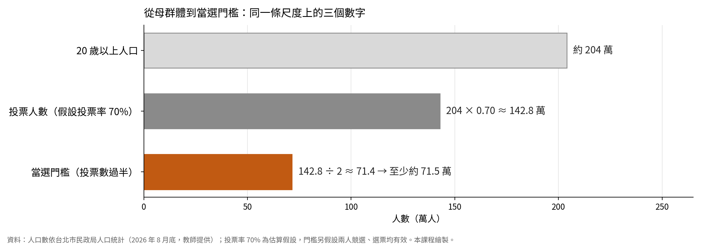
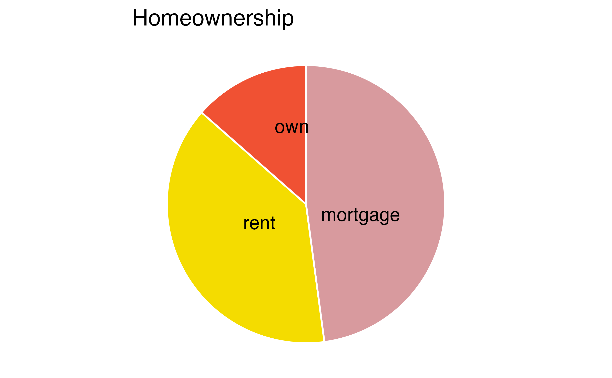
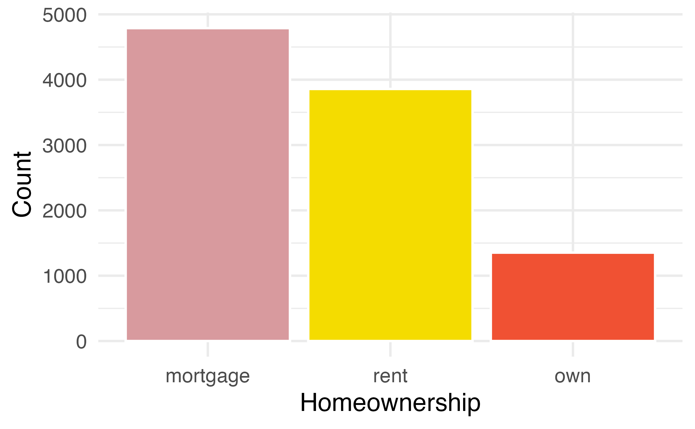
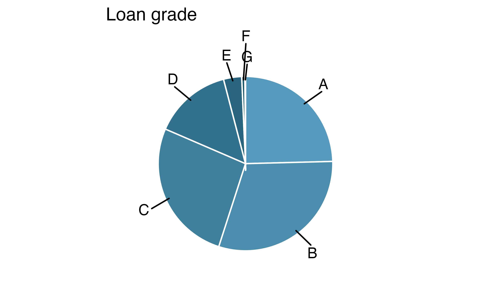
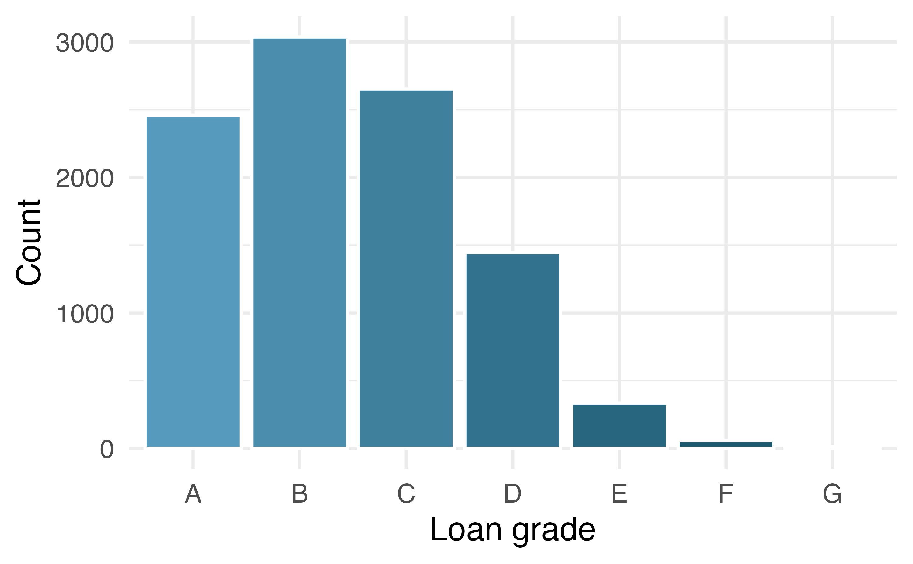
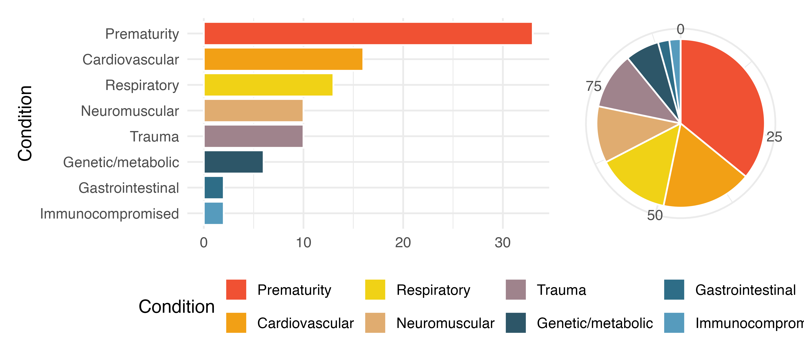
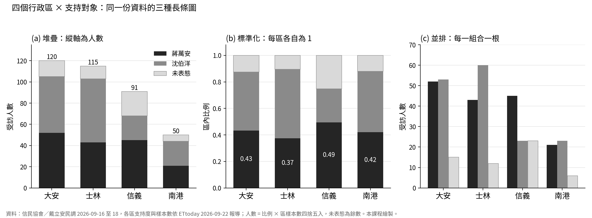
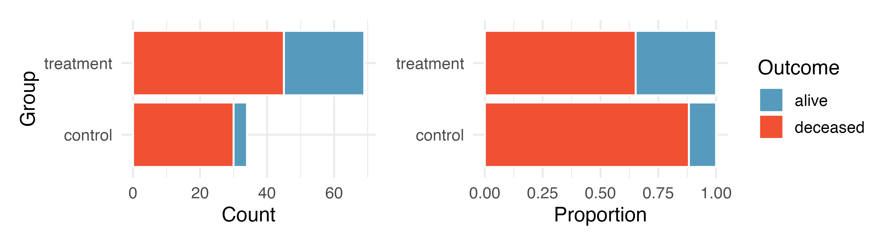

IMS 2e · Exploring categorical data · 以台北市長選舉民調為例
2026/09/24
第一段確認了民調的一列是一位受訪者；現在看類別變項的分布。
先說清楚要比較什麼，再選能回答問題的圖表。
IMS Ch. 4 Exploring categorical data · 本課程整理
| 支持對象 | 人數（由比例反推，約） | 比例 |
|---|---|---|
| 蔣萬安 | 449 | 0.417 |
| 沈伯洋 | 436 | 0.405 |
| 未表態 | 191 | 0.178 |
| 合計 | 1,076 | 1.000 |
次數回答「有多少人」，比例回答「占多少」。分母是 1,076 位受訪者；未表態也是一個水準。若把它拿掉再算，蔣萬安變成 449／885＝50.7%，問題已經變成「表態者中的比例」。
類別水準（level） 次數（count） 比例（proportion） 未表態（undecided）
4.1 Contingency tables and bar plots · 信民協會／戴立安民調（2026-09-16–18），比例依報導，人數為課堂反推近似值

左為人數，右為比例。兩張圖的長條高低順序有變嗎？右圖看得出組成，但看不出總共問了多少人。
長條圖（bar plot）：單一變項時，次數與比例只差在縱軸
4.1 Contingency tables and bar plots 概念 · 本課程依民調數字自製圖，非教材原圖

年齡組是次序（ordinal）類別：長條照年齡順序排，不照高低重排。四組的年齡跨度不同（20、10、15 年、不封頂）；左圖 20–39 歲看起來人很多，換成每一歲的人數（右圖）還一樣嗎？
母群體約 204 萬人；1,076 位受訪者，每人約代表 1,900 人
4.1 Contingency tables and bar plots 概念應用 · 台北市民政局人口統計（2026 年 8 月底，教師提供）；本課程自製圖，非教材原圖

204 萬 × 70% ≈ 142.8 萬人投票；過半約需 71.5 萬票。71.5 萬占投票數約 50%，只占 20 歲以上人口約 35%。同一個 71.5 萬，換了分母，比例就不同。
投票率 70% 為估算；門檻另假設兩人競選、選票均有效
民調的 41.7% 以 1,076 位受訪者為分母，包含日後不去投票的人與未表態者；它不是得票率，也不能直接乘上 142.8 萬換算成票數。
長條圖與分母概念應用 · 人口數依台北市民政局人口統計（教師提供）；投票率與門檻為估算




原書貸款資料：上排三個水準（Figure 4.5），下排七個貸款等級（4.6）；左為圓餅圖，右為長條圖。若把 41.7% 與 40.5% 畫成兩個扇形，看得出誰多嗎？
圓餅圖（pie chart）以角度與面積編碼；長條圖以長度編碼。水準愈多、比例愈接近，圓餅圖愈難排序
4.4 Pie charts · IMS Figures 4.5、4.6

長條圖用長度編碼，容易排序；圓餅圖較容易給出「大約占一半」這類整體印象。觀察單位是參與研究的兒童。
4.8 Exercises 題 1 Antibiotic use in children
| 行政區 | 蔣萬安 | 沈伯洋 | 未表態 | 列總和 |
|---|---|---|---|---|
| 大安 | 52 | 53 | 15 | 120 |
| 士林 | 43 | 60 | 12 | 115 |
| 信義 | 45 | 23 | 23 | 91 |
| 南港 | 21 | 23 | 6 | 50 |
| 欄總和 | 161 | 159 | 56 | 376 |
一格是同時滿足兩個條件的人數。大安列的 120，可以當分子，也可以當分母，要看你問的是什麼。人數由報導的各區支持度 × 區樣本數反推，四捨五入。
列聯表（contingency table） 列總和（row totals） 欄總和（column totals）
4.1 Contingency tables and bar plots · 信民協會／戴立安民調 12 區中的 4 區，依 ETtoday 2026-09-22 報導轉述
「大安區受訪者中，支持沈伯洋的占多少？」
分母是大安區的 120 人 → 53／120 ＝ 0.442
「這四區支持沈伯洋的人中，住大安區的占多少？」
分母是支持沈伯洋的 159 人 → 53／159 ＝ 0.333
分子同樣是 53 人，換了分母就成為兩個不同的問題，答案也不同。報導的「大安區沈伯洋 44.3%」是第一種；選分母之前，先把問題寫成一句話。
條件比例（conditional proportion）
4.3 Row and column proportions · 數字依報導反推
| 蔣萬安 | 沈伯洋 | 未表態 | 合計 | |
|---|---|---|---|---|
| 大安 | 0.433 | 0.442 | 0.125 | 1 |
| 士林 | 0.374 | 0.522 | 0.104 | 1 |
| 信義 | 0.495 | 0.253 | 0.253 | 1 |
| 南港 | 0.420 | 0.460 | 0.120 | 1 |
分母是該列的總和：各區內的支持組成。
| 蔣萬安 | 沈伯洋 | 未表態 | |
|---|---|---|---|
| 大安 | 0.323 | 0.333 | 0.268 |
| 士林 | 0.267 | 0.377 | 0.214 |
| 信義 | 0.280 | 0.145 | 0.411 |
| 南港 | 0.130 | 0.145 | 0.107 |
| 合計 | 1.000 | 1.000 | 1.000 |
分母是該欄的總和：各候選人的支持者來自哪一區。
同一格的分子都是 53。0.442 是「大安區受訪者中支持沈伯洋的比例」，0.333 是「沈伯洋支持者中住大安區的比例」。欄比例會受各區樣本數影響：南港只問了 50 人，三欄都小。
列比例（row proportions） 欄比例（column proportions）
4.3 Row and column proportions · 數字依報導反推
報導：「國民黨支持者中，96.1% 支持蔣萬安。」樣本中國民黨認同者占 24.3%（約 261 人）；蔣萬安支持者約 449 人。
人數是由報導百分比反推的近似值。報導只給了一個方向的條件比例；要回答另一個方向，需要整張列聯表。
4.3 Row and column proportions · 信民協會／戴立安民調政黨認同數字依報導轉述

由左至右：堆疊、標準化、並排。哪一張最容易看出四區的支持組成差異？哪一張看得出南港只有 50 人？
堆疊長條圖（stacked bar plot） 標準化長條圖（standardized／filled bar plot） 並排長條圖（dodged bar plot）
4.2.1 Bar plots with two variables 概念 · 本課程依民調數字自製圖，非教材原圖
| 圖型 | 保留什麼資訊 | 適合回答的問題 |
|---|---|---|
| 堆疊 | 各區的實際人數與總量 | 哪一區問到的人最多？ |
| 標準化 | 每區各自加總為 100% 的組成 | 各區的支持組成差在哪裡？ |
| 並排 | 每一種組合的人數 | 同一區內，兩位候選人的支持人數差多少？ |
標準化圖把每一區拉成同樣高度，大安 120 人、南港 50 人的差異就看不到了。用這種圖時，要另外寫出各區的人數；下一段會看到人數少的區，誤差有多大。
4.2.1 Bar plots with two variables
想比較民調中各政黨認同群的支持組成（蔣萬安、沈伯洋、未表態各占多少）。各群人數差很多：民進黨認同者約 352 人，民眾黨認同者約 58 人。若目的是比較各群的組成比例，下列哪一種圖最直接？
B。各群人數差很多時，以人數為縱軸的圖會讓人數多的那一群看起來比例也高。標準化長條圖把每一群各自拉成 100%，可以直接比較組成；代價是看不出各群人數，報告時要另外寫出 352 人與 58 人。
4.2.1 Bar plots with two variables · 自編練習；各群人數由報導比例反推

右圖（標準化）直接比較存活比例；左圖（堆疊）保留兩組人數。圖表呈現的是差異；能否解釋為處置效果，還要核對研究設計。
4.8 Exercises 題 5 Heart transplant data display
IMS §4.7.1 Summary · 本課程整理
loans、email 資料集（openintro）示範，可自行對照。assets/taipei_mayor_poll_2026_sources.md；本課程未取得原始報告，各頁人數為由報導比例反推的近似值。兩張民調長條圖為本課程自製。複習時，拿一張圖先問：它的分母是誰？它能回答我的問題嗎？
IMS Ch. 4 Exploring categorical data
HT3001B · Week 03